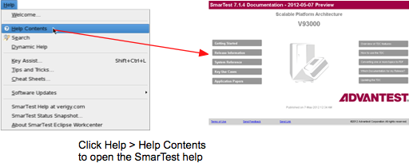
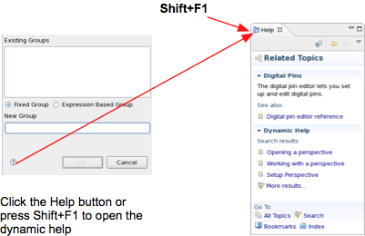
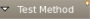
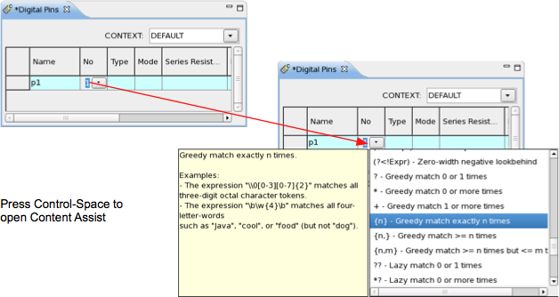
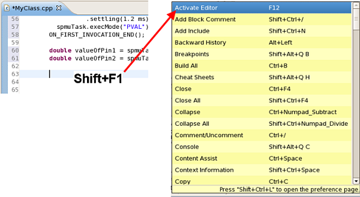

Help overview
SmarTest offers several systems to assist you in your work.
These help systems are:
- V93000 online help
- Dynamic help
- Content Assist for all text entry tasks
- Key Assist
V93000 help
The V93000 help is the full-fledged documentation for both SmarTest and the V93000 hardware at your fingertips. It includes all manuals, release notes, use case descriptions, and application notes.
The V93000 help is installed by default with SmarTest. If no help was installed on your system, you can install your choice of packages (SmarTest, MTP, Service) from the V93000 Technical Documentation Center DVD or from the Internet. See the installation guide for details.
To open the V93000 help, choose .
For a comprehensive overview of the SmarTest help and its features, see How to use the TDC.

Context sensitive help
The context sensitive help provides key facts for the view or dialog in which you are working as well as links to related procedures and reference information. It is displayed in an Eclipse view alongside the view or dialog.
Context sensitive help is available when you have installed the SmarTest package of the V93000 help (see above).
Open it by clicking the Help button or pressing Shift+F1.

Content Assist
Content Assist is syntax and text entry help available in many locations where you need to enter text. It displays a choice of entries and constructs appropriate to the context.
Content Assist is automatically available when you have installed SmarTest.
To access Content Assist, press Control+Space. Sometimes a small light bulb icon (top right in this sample image

) indicates the presence of Content Assist. Some more complex selection lists are accessed by clicking a button .For more information, see Working with Content Assist.

Key Assist
Key Assist is a context sensitive help for local keyboard shortcuts available for most SmarTest functions. It displays all commands of the Eclipse Workcenter to the context, and depends if the focus is on a viewer or an editor.

Functional changes
- Introduced before SmarTest 6.3.2
- SmarTest 6.5.3: New function Context Sensitive Help